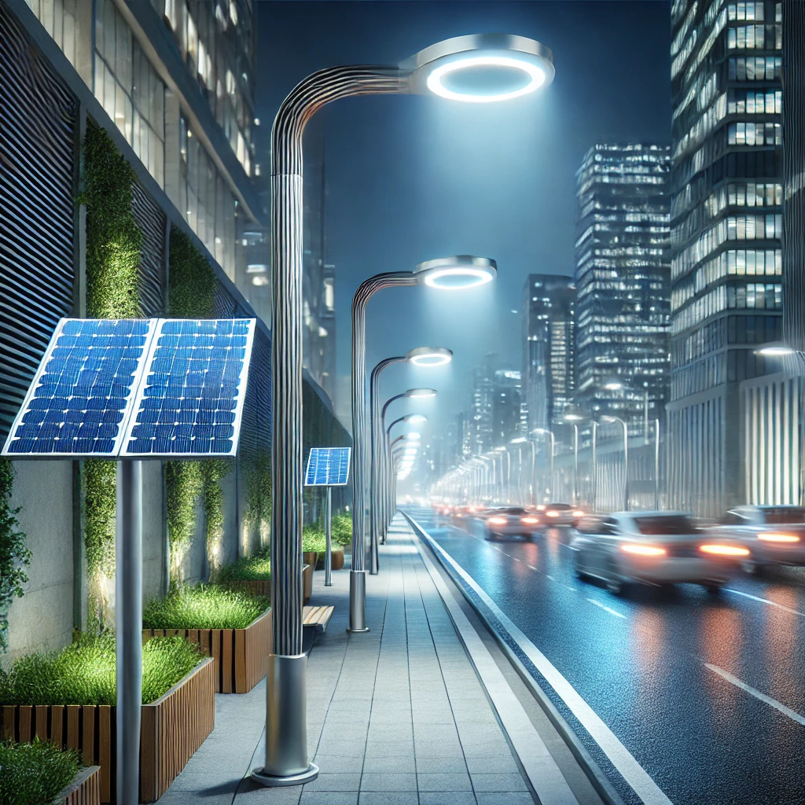
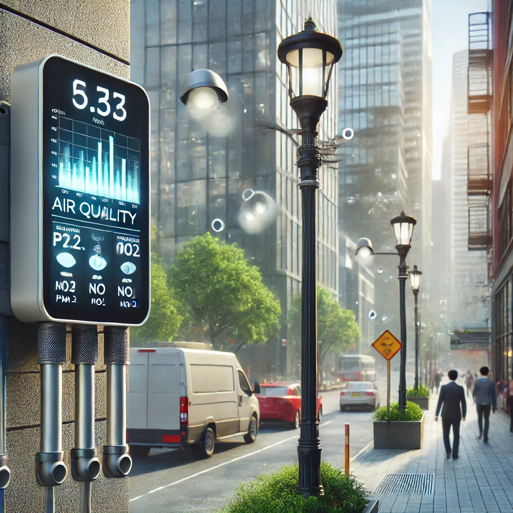

Over Ons
EcoSphere Connect
Onze visie
Bij EcoSphere Connect geloven we in een duurzame toekomst waarin technologie en natuur hand in hand gaan. Als innovatief bedrijf gespecialiseerd in Internet of Things (IoT)-oplossingen, richten we ons op het verbeteren van klimaatbeheer en energie-efficiëntie.
Onze missie
Onze missie is simpel: slimme technologie inzetten om een schonere en groenere planeet te creëren. Of het nu gaat om het optimaliseren van energieverbruik, het monitoren van milieu-impact of het bevorderen van circulaire processen, wij bieden op maat gemaakte IoT-oplossingen die organisaties helpen hun ecologische voetafdruk te verkleinen.
Ons team
Met een team van gepassioneerde experts combineren we technologische innovatie met duurzame inzichten. EcoSphere Connect werkt samen met bedrijven, gemeentes en non-profitorganisaties om slimme, schaalbare en milieuvriendelijke systemen te implementeren.
Samen voor de toekomst
Samen bouwen we aan een verbonden ecosysteem waarin elke beslissing, groot of klein, bijdraagt aan een betere wereld voor de generaties van morgen. Doe met ons mee en maak impact!
Klimaatverandering
EcoSphere Connect
Hoe werkt IoT4Climate?
IoT-apparaten zoals sensoren en drones verzamelen gegevens over belangrijke klimaatparameters, zoals temperatuur, luchtvochtigheid en CO₂-niveaus. Met behulp van kunstmatige intelligentie (AI) worden deze gegevens geanalyseerd om patronen te herkennen en voorspellingen te doen. Dit helpt bij:
- Real-time monitoring van klimaatgegevens.
- Het voorspellen van natuurrampen.
- Het optimaliseren van energie- en waterbeheer.
Waarom is IoT4Climate belangrijk?
Klimaatverandering heeft ingrijpende gevolgen. Volgens NASA stijgen de temperaturen wereldwijd en smelten ijskappen sneller dan ooit. De Vlaamse Milieumaatschappij wijst op de stijgende jaargemiddelde temperaturen in België. IoT4Climate helpt bij:
- Vroegtijdige waarschuwingssystemen voor rampen.
- Verlagen van de ecologische voetafdruk.
- Het ondersteunen van aanpassingen aan extreme weersomstandigheden.
Toepassingen van IoT4Climate
De technologie kan worden toegepast in verschillende sectoren:
- Slimme landbouw: Verbetering van gewasbeheer door bodemvocht en weerdata te monitoren.
- Waterbeheer: Lekken detecteren en waterverbruik optimaliseren.
- Stedelijke planning: Verminderen van CO₂-uitstoot door luchtkwaliteit en verkeer te beheren.
- Natuurrampenbeheer: Real-time waarschuwingen op basis van sensorgegevens.
Conclusie
IoT4Climate biedt innovatieve oplossingen voor het begrijpen en bestrijden van klimaatverandering. Door technologie te combineren met wetenschap kunnen we de impact van klimaatverandering verminderen en een duurzamere toekomst opbouwen.
IoT Oplossingen
EcoSphere Connect
IoT tegen Klimaatverandering
Voorbeelden van IoT-oplossingen:
Slimme Straatverlichting
Moderne IoT-gestuurde straatverlichtingssystemen kunnen steden helpen energieverbruik te verminderen en koolstofemissies terug te dringen. Deze systemen maken gebruik van sensoren die beweging detecteren en de verlichting aanpassen aan de actuele behoeften. Wanneer er geen verkeer of voetgangers zijn, dimmen de lichten automatisch, waardoor onnodig energieverbruik wordt voorkomen. Daarnaast kunnen deze systemen worden gekoppeld aan weersensoren om verlichting te optimaliseren bij mist of zware regenval. Dit verhoogt niet alleen de energie-efficiëntie, maar ook de veiligheid op straat. In sommige steden wordt deze technologie uitgebreid met zonnepanelen, waardoor straatverlichting volledig duurzaam wordt aangedreven
Monitoring van Stedelijke Hitte-eilanden
Stedelijke hitte-eilanden ontstaan doordat beton en asfalt warmte vasthouden, wat leidt tot hogere temperaturen in stedelijke gebieden vergeleken met omliggende landelijke gebieden. IoT-sensoren kunnen op verschillende locaties in steden worden geïnstalleerd om deze temperatuurverschillen te meten. De verzamelde data kunnen beleidsmakers informeren over waar vergroening nodig is, zoals het planten van bomen of aanleggen van groene daken. Daarnaast kunnen reflecterende oppervlakken en materialen in infrastructuur worden toegepast om warmte te verminderen. Deze technologieën helpen niet alleen bij het verlagen van de temperaturen, maar verbeteren ook de luchtkwaliteit en het comfort voor bewoners.
IoT-gestuurde Luchtkwaliteitssensoren
Luchtvervuiling is een groeiend probleem in steden, en IoT-apparaten kunnen helpen om realtime luchtkwaliteitsmetingen uit te voeren. Deze sensoren worden op strategische plekken in steden geplaatst en kunnen niveaus van schadelijke stoffen, zoals fijnstof (PM2.5) en stikstofdioxide (NO2), meten. De gegevens worden geanalyseerd en gedeeld via openbare platforms, zodat inwoners gezondheidsbewuste beslissingen kunnen nemen, zoals het vermijden van zwaar vervuilde gebieden. Steden kunnen deze gegevens ook gebruiken om specifieke beleidsmaatregelen te ontwikkelen, zoals het beperken van verkeersstromen in vervuilde zones of het stimuleren van elektrische voertuigen. Bovendien kunnen luchtkwaliteitssensoren worden gekoppeld aan weersvoorspellingsmodellen, waardoor vervuilingspieken beter kunnen worden voorspeld en aangepakt.
Contacteer Ons
EcoSphere Connect
IoT4climate
Locatie: xaverianenstraat 10, 8200 Brugge
Email: info@iot4climate.com
Telefoon: 012-3456789
Site: www.iot4clim./recources/images/unoline-icons/unoline-icons/Unoline/Essentials/search.svg" alt="de Site" class="icons">